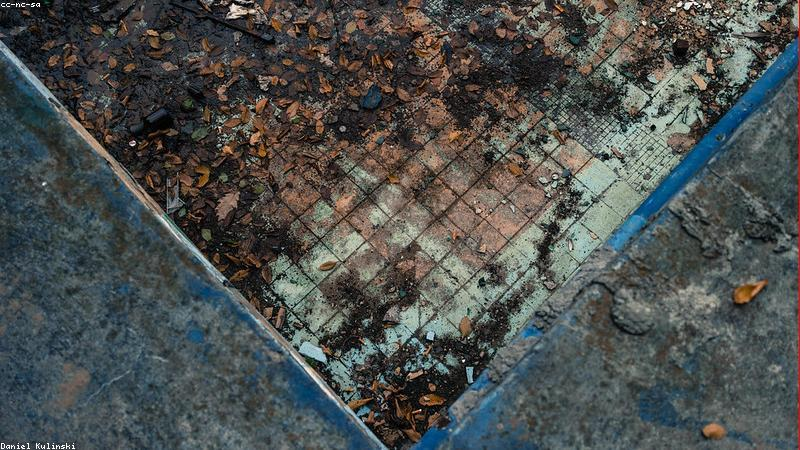

NO. 29
空泳池
水乾了，笑聲還在。
廢泳池，他下去撿球，聽見水面拍打的笑。抬頭，池邊坐一排穿泳衣的孩子，透明。
孩子齊聲：『一起游啊。』他後退，腳陷乾裂池底，拔出時鞋底沾著濕沙。
報紙舊聞：此池曾淹三童，從此每逢晴日，池底濕。

廢泳池，他下去撿球，聽見水面拍打的笑。抬頭，池邊坐一排穿泳衣的孩子，透明。
孩子齊聲：『一起游啊。』他後退，腳陷乾裂池底，拔出時鞋底沾著濕沙。
報紙舊聞：此池曾淹三童，從此每逢晴日，池底濕。